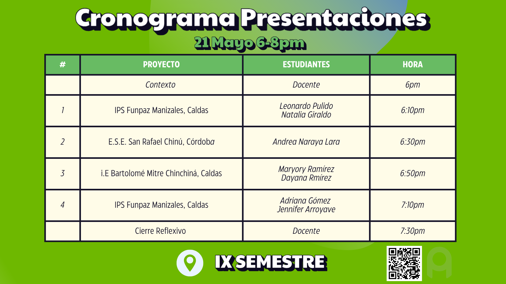
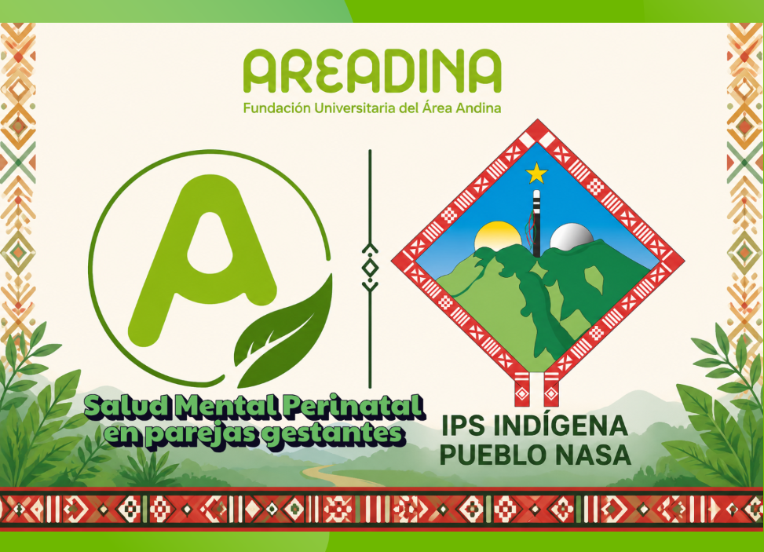
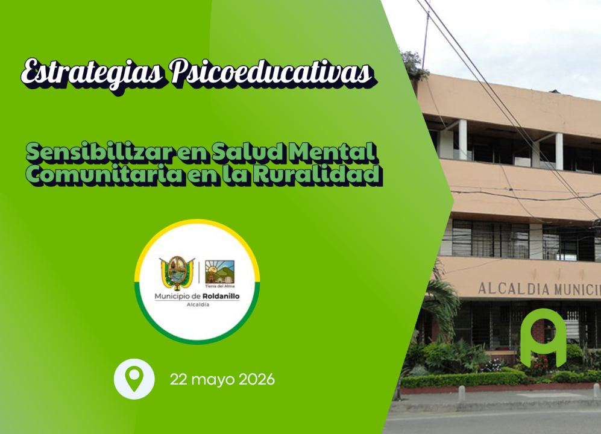
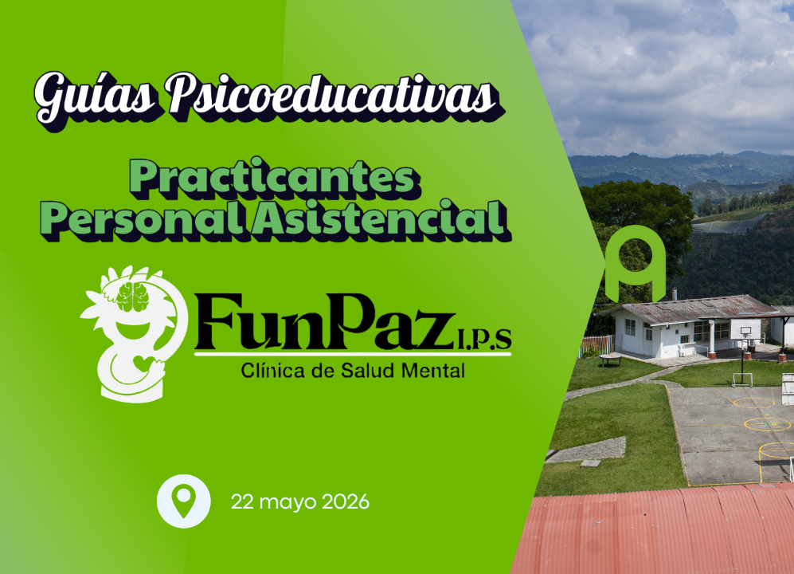
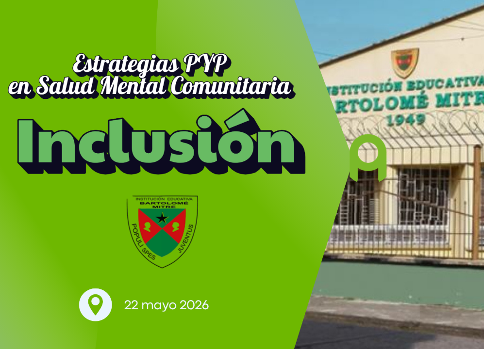
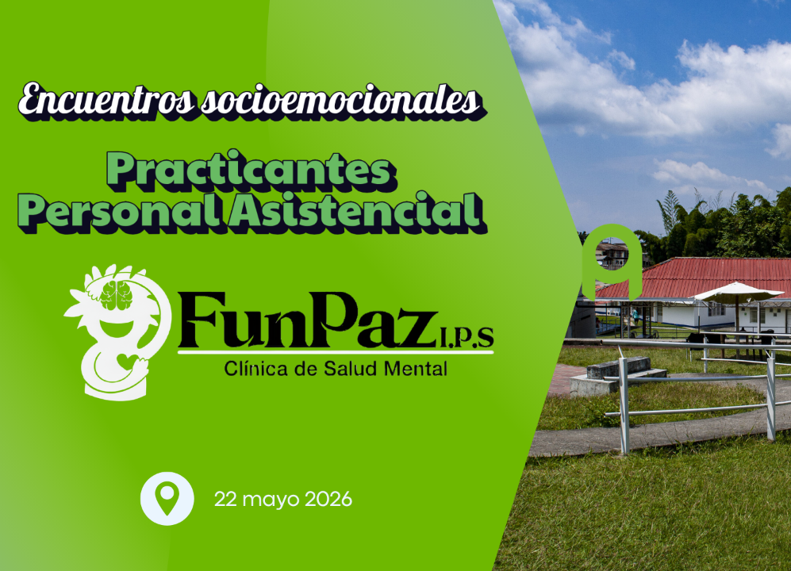
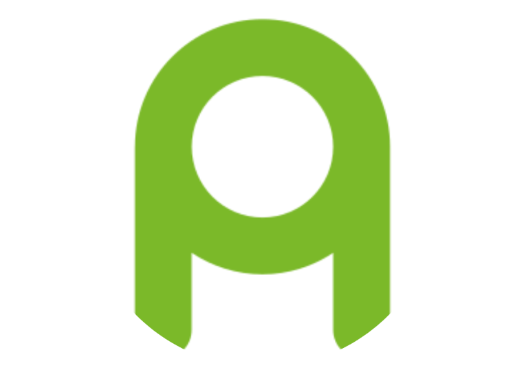

Prácticas Clínicas I y II de Psicología Virtual Areandina
Experiencias formativas orientadas a la promoción de la salud mental,
la psicoeducación y la transformación social en comunidades urbanas
y rurales de Colombia.

👨🏼🎓PROYECTOS






Fundación UNICO
El proyecto Higiene del Sueño promovió el bienestar y la salud mental del equipo psicosocial mediante encuentros psicoeducativos orientados al fortalecimiento de hábitos saludables de descanso, liderados por Ángela Bastidas y Eliana Avila desde las Prácticas Clínicas del programa de Psicología Virtual de Fundación Universitaria del Área Andina.
El proyecto de salud mental perinatal desarrollado por Leidy Johana Caviche en el municipio de Caldono, Cauca promovió el bienestar emocional y el acompañamiento psicosocial de mujeres gestantes mediante encuentros orientados al cuidado integral durante la maternidad. La intervención se realizó en la Asociación de Cabildos Ukawesx Nasa Çxhab, Sa'th Tama Kiwe, integrando la medicina tradicional, ancestral y convencional como una estrategia intercultural de atención, reconociendo los saberes propios del pueblo indígena Nasa y fortaleciendo la salud mental desde el territorio, la espiritualidad y el cuidado comunitario.
El proyecto liderado por Nataly Buchuelli en Roldanillo, Valle del Cauca fortaleció la sensibilización en salud mental comunitaria en contextos rurales mediante encuentros psicoeducativos orientados a la promoción del bienestar emocional, la prevención de riesgos psicosociales y el fortalecimiento del tejido comunitario. La iniciativa, desarrollada junto a la Alcaldía Municipal de Roldanillo, promovió espacios de escucha, participación y educación en salud mental desde un enfoque humano, territorial y comunitario.
El proyecto desarrollado por Leonardo Pulido y Natalia Giraldo en Manizales, Caldas en una clínica de salud mental psiquiátrica estuvo orientado al diseño de guías psicoeducativas para practicantes clínicos, fortaleciendo competencias para la realización de talleres dinámicos y la intervención en situaciones de crisis en salud mental.
La propuesta incluyó orientación sobre rutas de atención y activación institucional en casos presentados después de las 5:00 p. m., fines de semana y horarios de contingencia, favoreciendo una atención más oportuna, segura e interdisciplinaria en contextos de atención psiquiátrica.
El proyecto de inclusión desarrollado por Maryory Ramírez y Dayana Ramírez en Chinchiná, Caldas promovió estrategias
de prevención y promoción de la salud mental comunitaria dirigidas a población adolescente y padres de familia.
A través de encuentros psicoeducativos y espacios participativos, la iniciativa fortaleció la convivencia, la comunicación familiar y la sensibilización frente al bienestar emocional, fomentando procesos de inclusión y construcción de entornos más saludables para la comunidad.
El proyecto desarrollado por Andrea Nayara Lara en la E.S.E Hospital San Rafael en Chinú, Córdoba estuvo orientado al diseño de una ruta de atención en conducta suicida, con el propósito de fortalecer los procesos de prevención, orientación e intervención oportuna en salud mental.
La propuesta será socializada el próximo semestre con la comunidad y el personal asistencial, promoviendo mayor articulación institucional, sensibilización y atención integral frente a situaciones de riesgo psicosocial.
El proyecto de encuentros socioemocionales desarrollado por Adriana Gómez y Jennifer Arroyave en Manizales, Caldas en la IPS FUNPAZ promovió espacios psicoeducativos orientados al fortalecimiento de la gestión emocional, el bienestar psicológico y las habilidades socioemocionales.
La iniciativa estuvo dirigida tanto a futuros practicantes clínicos como a la comunidad, favoreciendo procesos de aprendizaje, escucha y acompañamiento para afrontar las emociones de manera saludable en diferentes contextos de la vida cotidiana.
Las Prácticas Clínicas I y II del programa de Psicología Virtual de Fundación Universitaria del Área Andina consolidaron el desarrollo de 7 proyectos formativos en 6 convenios institucionales ubicados en Caldas, Córdoba, Cauca y Valle del Cauca, integrando procesos de intervención y acompañamiento psicosocial en contextos urbanos y rurales.
Desde la virtualidad, los estudiantes lograron generarimpacto en comunidades de diferentes territorios del país mediante estrategias innovadoras de promoción de la salud mental, educación emocional y fortalecimiento del bienestar comunitario.
Los proyectos estuvieron dirigidos a adolescentes, adultos, padres de familia, personal asistencial, comunidades indígenas, instituciones educativas y escenarios hospitalarios tanto públicos como privados, fortaleciendo procesos de psicoeducación, prevención e inclusión social.
Estas experiencias reflejan el compromiso de la Psicología Virtual Areandina con la formación humana, la transformación social y el uso de metodologías flexibles y creativas para acercar la salud mental a diferentes poblaciones de Colombia.
El objetivo del programa de Psicología de AREANDINA es formar psicólogos comprometidos con la promoción de la inclusión y la equidad en Colombia, brindándoles conocimientos teóricos y habilidades prácticas para abordar situaciones psicosociales que afectan la salud mental de las personas.
Este enfoque interdisciplinario y basado en competencias y valores humanistas fomenta el pensamiento crítico, la resolución de problemas y la responsabilidad social, centrándose en la evaluación, diagnóstico e intervención en psicología, con énfasis en el modelo cognitivo-conductual y la Psicología Basada en la Evidencia.
Además, integra la investigación en proyectos que abordan problemáticas psicosociales y utiliza la tecnología de manera humanista para formar psicólogos competentes y éticos que contribuyan al bienestar social en todo el país.
El espacio de Prácticas Clínicas I y II del programa de Psicología Virtual de Fundación Universitaria del Área Andina fortalece las competencias profesionales de los estudiantes mediante experiencias formativas orientadas a la evaluación, intervención y promoción de la salud mental en diversos contextos sociales, clínicos y comunitarios. Estos escenarios permiten integrar los conocimientos teóricos con habilidades prácticas, éticas y humanas, favoreciendo una atención centrada en el bienestar integral de las personas y comunidades.
A través de proyectos innovadores, estrategias psicoeducativas y procesos de acompañamiento, los estudiantes desarrollan habilidades en escucha activa, pensamiento crítico, trabajo interdisciplinario y gestión de procesos de atención psicológica. Las prácticas representan un espacio de transformación académica y social, donde la psicología se convierte en una herramienta para generar impacto, prevención y construcción de bienestar en diferentes poblaciones.